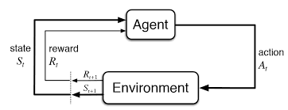

Markov Decision Process
Let's start by defining the Markov Decision Process (MDP).
Suppose we have a set of states $S$, a set of actions $A$, a transition function $P(s'|s, a)$, a reward function $R(s, a, s')$, a discount factor $\gamma$, a start state $s_0$, and the number of steps (i.e., Horizon) $H$.

The MDP is illustrated in the above diagram, where the agent starts at state $s_0$, and takes action $a$ at state $s$, then the environment transitions to state $s'$ with probability $P(s'|s, a)$, and the agent receives reward $R(s, a, s')$. The goal is to find the optimal policy $\pi$ that maximizes the expected reward: $$V^*(s) = \max_{\pi} \mathbb{E} \left[ \sum_{t=0}^{H} \gamma^t R(s_t, a_t, s_{t+1}) \mid s_0 = s \right]$$ where $V^*(s)$ is the optimal value function (i.e., sum of discounted rewards when starting from state $s$ to the end of the horizon $H$ under the optimal policy $\pi^*$).Value Iteration
Let's start by thinking about how to compute the optimal value recursively :
- $V_0^*(s)$ denotes the optimal value for state $s$ when the horizon $H = 0$. Since the horizon is 0, there's no action to take, and we will just assume the value of doing nothing is 0 in this case: $V_0^*(s) = 0 \quad \forall s$.
-
$V_1^*(s)$ denotes the optimal value for state $s$ when the horizon $H = 1$. The agent can take one action, and we should choose the action that maximizes reward after taking that action (note that the transition is not deterministic so we need to consider all possible next states $s'$):
$$V_1^*(s) = \max_{a} \sum_{s'} P(s'|s, a) \left[ R(s, a, s') + \gamma V_0^*(s') \right]$$ - Similarly, we can recursively define $V_2^*(s)$ as: $$V_2^*(s) = \max_{a} \sum_{s'} P(s'|s, a) \left[ R(s, a, s') + \gamma V_1^*(s') \right]$$
- In general, we can recursively define $V_k^*(s)$ as: $$V_k^*(s) = \max_{a} \sum_{s'} P(s'|s, a) \left[ R(s, a, s') + \gamma V_{k-1}^*(s') \right]$$ This is known as the Bellman equation for $V_k^*(s)$.
Algorithm: Value Iteration
- Initialize: $V_0^*(s) \leftarrow 0 \;\; \forall s$.
- For $k = 1, \ldots, H$:
- for each state $s \in S$, update:
- $$V_k^*(s) = \max_{a} \sum_{s'} P(s'|s, a) \left[ R(s, a, s') + \gamma V_{k-1}^*(s') \right]$$
- where the optimal policy can be extracted as: $$\pi_k^*(s) = \arg \max_{a} \sum_{s'} P(s'|s, a) \left[ R(s, a, s') + \gamma V_{k-1}^*(s') \right]$$
We can do Q-value iteration in a similar way. We define $Q^*(s, a)$ as the expected utility starting in state $s$, taking action $a$, and then following the optimal policy. We can write out the Bellman equation for $Q^*(s, a)$ as: $$Q^*(s, a) = \sum_{s'} P(s'|s, a) \left[ R(s, a, s') + \gamma \max_{a'} Q^*(s', a') \right]$$ We can easily plug this into the value iteration algorithm to get the Q-value iteration algorithm, where the update step does: $$Q_k^*(s, a) = \sum_{s'} P(s'|s, a) \left[ R(s, a, s') + \gamma \max_{a'} Q_{k-1}^*(s', a') \right]$$ And the optimal policy is greedy with respect to the Q-value function: $$\pi_k^*(s) = \arg \max_{a} Q_k^*(s, a)$$ Policy Iteration
For a given policy $\pi(s)$, if it's deterministic, we can evaluate the value function $V^\pi(s)$ as: $$V^\pi(s) = \sum_{s'} P(s'|s, \pi(s)) \left[ R(s, \pi(s), s') + \gamma V^\pi_{k-1}(s') \right]$$ And if the policy is stochastic where $\pi(a|s)$ is the probability of taking action $a$ in state $s$, we can evaluate the value function $V^\pi(s)$ as: $$V^\pi(s) = \sum_{a} \pi(a|s) \sum_{s'} P(s'|s, a) \left[ R(s, a, s') + \gamma V^\pi(s') \right]$$ Previously in value iteration and Q-value iteration, there's no explicit policy update step: we always adopt a greedy policy and only update the value (or Q-value) function. In the policy iteration algorithm, we alternate between policy evaluation and policy improvement steps:
Algorithm: Policy Iteration
- Initialize $\pi(s)$ arbitrarily for all $s \in S$.
- Loop:
- Policy evaluation for current policy $\pi_k(s)$, iterate until convergence: $$V^{\pi_k}_{i+1}(s) \leftarrow \sum_{s'} P(s'|s, \pi_k(s)) \left[ R(s, \pi_k(s), s') + \gamma V^{\pi_k}_i(s') \right]$$
- Policy improvement (with fixed value function, find best action for one-step lookahead): $$\pi_{k+1}(s) \leftarrow \arg \max_{a} \sum_{s'} P(s'|s, a) \left[ R(s, a, s') + \gamma V^{\pi_k}_i(s') \right]$$
- Repeat until convergence.
Max-Entropy RL
Reminder entropy measures uncertainty and is computed as: $$H(p) = \sum_i p(x_i) \log \frac{1}{p(x_i)} = - \sum_i p(x_i) \log p(x_i)$$ While the regular formualtion of RL aims to find (ignoring the discount factor): $$\max_{\pi} \mathbb{E} \left[ \sum_{t=0}^{H} R_t \right]$$ The max entropy formulation aims to find: $$\max_{\pi} \mathbb{E} \left[ \sum_{t=0}^{H} ( R_t + \beta H(\pi(\cdot|s_t)) ) \right]$$ This helps us find a distribution of near-optimal policies rather than collapsing to one. To solve it, let's first quickly recap constrained optimization. Suppose we want to solve: $$\max_{x} f(x) \quad \text{subject to} \quad g(x) = 0$$ The Lagrangian is: $$\mathcal{L}(x, \lambda) = f(x) + \lambda g(x)$$ and the dual problem is: $$\min_{\lambda} \max_{x} \mathcal{L}(x, \lambda) = \min_{\lambda} \max_{x} f(x) + \lambda g(x)$$ At the optimal point, the gradient of the Lagrangian with respect to $x$ should be 0: $$\frac{\partial \mathcal{L(x, \lambda)}}{\partial x} = 0, \quad \frac{\partial \mathcal{L(x, \lambda)}}{\partial \lambda} = 0$$ If we plug this into an one-step max-ent RL objective, we get: $$\max_{\pi(a)} E[r(a)] + \beta H(\pi(\cdot|s)) = \max_{\pi(a)} \sum_{a} \pi(a) r(a) - \beta \sum_{a} \pi(a) \log \pi(a)$$ $$\min_{\lambda} \max_{\pi(a)} \mathcal{L(\pi(a), \lambda)} = \sum_{a} \pi(a) r(a) - \beta \sum_{a} \pi(a) \log \pi(a) + \lambda (\sum_{a} \pi(a) - 1)$$ Solve for $\pi(a)$ by setting the gradient to 0, we get: $$\pi(a) = \frac{1}{Z} \text{exp}(\frac{1}{\beta} r(a)), \quad Z = \sum_{a} \text{exp}(\frac{1}{\beta} r(a))$$ Plugging this back into the objective, we get the optimal value: $$V = \beta \log \sum_{a} \text{exp}(\frac{1}{\beta} r(a))$$ Now let's consider the multi-step case. Our objective is: $$\max_{\pi} \mathbb{E} \left[ \sum_{t=0}^{H} ( r_t + \beta H(\pi(\cdot|s_t)) ) \right]$$ As in value iteration, we can write out the Bellman equation for the value function: \begin{align*} V_k(s) &= \max_{\pi} \mathbb{E}\left[ \sum_{t = (H-k)}^{H} \left( r_t + \beta H(\pi(a_t \mid s_t)) \right) \right] \\ &= \max_{\pi} \mathbb{E}\left[ r(s, a) + \beta H(\pi(a \mid s)) + \gamma V_{k-1}(s') \right] \\ &= \max_{\pi} \mathbb{E}\left[ Q_k(s,a) + \beta H(\pi (a \mid s)) \right] \\ \end{align*} where $Q_k(s,a) = E [r(s, a) + V_{k-1}(s')]$. The above reduces to the one-step case with $Q$ instead of $r$. We can directly trasnscribe the solution: $$V_k(s) = \beta \log \sum_{a} \text{exp}(\frac{1}{\beta} Q_k(s,a))$$ $$\pi_k(a|s) = \frac{1}{Z_k} \text{exp}(\frac{1}{\beta} Q_k(s,a)), \quad Z_k = \sum_{a} \text{exp}(\frac{1}{\beta} Q_k(s,a))$$ You can recognize that this is taking the softmax of the Q-value function: $$\pi_k(a|s) = \text{softmax}(\frac{1}{\beta} Q_k(s,a))$$ where $\beta$ functions like a temperature parameter. When $\beta \to 0$, the policy becomes greedy. When $\beta \to \infty$, the policy becomes uniform.
Q Learning
In the tabular setting so far (finite number of states and actions), remember we defined Q-value as the expected return you’ll get if you start in state $s$ and take action $a$ now. You can get the optimal Q-value (i.e., following the optimal policy after taking action $a$) by using the Bellman equation: $$Q^*(s,a) = \sum_{s'} P(s'|s, a) \left[ R(s, a, s') + \gamma \max_{a'} Q^*(s', a') \right]$$ Based on this, we have the Q-value iteration algorithm: $$Q_{k+1}(s,a) \leftarrow E_{s' \sim P(s'|s, a)}[R(s, a, s') + \gamma \max_{a'} Q_k(s', a')]$$ Instead of enumerating all possible next states $s'$, we can use a sample-based approach to estimate the Q-value:
Algorithm: Tabular Q-Learning
- Start with $Q_0(s,a)$ for all $s,a$.
- Get initial state $s$.
- For $k=0,1,2,\ldots$ till convergence:
- Sample action $a$ and get next state $s'$.
- If $s'$ is terminal:
- target = $R(s,a,s')$
- Sample new initial state $s'$.
- If $s'$ is not terminal:
- target = $R(s,a,s') + \gamma \max_{a'} Q_k(s', a')$
- $Q_{k+1}(s,a) \leftarrow (1 - \alpha)Q_k(s,a) + \alpha [\text{target}] \quad$ (moving average update)
- Set $s \leftarrow s'$.
This means that Q-learning is an off-policy algorithm, i.e., we are using the greedy action to update the Q-value function, but we are sampling actions from a different policy (the $\epsilon$-greedy policy). Nevertheless, it still converges to the optimal Q-value function as long as we satisfy the following two conditions:
- All states and actions are visited infinitely often.
- The learning rate $\alpha$ decays appropriately such that for each $(s,a)$ pair: $\sum_{t=0}^{\infty} \alpha_t(s,a) = \infty$ and $\sum_{t=0}^{\infty} \alpha_t^2(s,a) < \infty$.
Algorithm: Deep Q-Learning with Experience Replay
- Initialize replay memory $D$ to capacity $N$.
- Initialize action-value function $Q$ with random weights.
- For episode = 1, ..., $M$, do:
- Initialize sequence $s_1 = {x_1}$ and preprocessed sequence $\phi_1 = \phi(s_1)$.
- For $t=1, \ldots, T$, do:
- With probability $\epsilon$ select a random action $a_t$,
- otherwise select $a_t = \arg \max_{a} Q( \phi(s_t), a; \theta )$.
- Execute action $a_t$ in emulator and observe reward $r_t$ and next screen $x_{t+1}$.
- Set $s_{t+1} = s_t, a_t, x_{t+1}$ and preprocess $\phi_{t+1} = \phi(s_{t+1})$.
- Store transition $( \phi_t, a_t, r_t, \phi_{t+1} )$ in $D$.
- Sample random minibatch of transitions $( \phi_j, a_j, r_j, \phi_{j+1} )$ from $D$.
- Set $y_j =$ {
$r_j$ for terminal $\phi_{j+1}$
$r_j + \gamma \max_{a'} Q(\phi_{j+1}, a'; \theta)$ otherwise
} - Perform a gradient descent step on $(y_j - Q(\phi_j, a_j; \theta))^2$.
- end for
- end for
References: